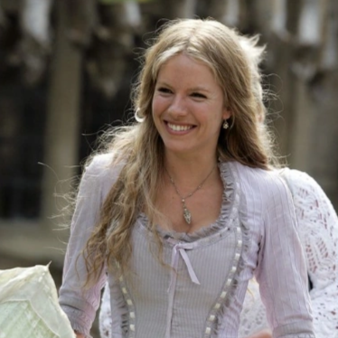

Yvaine is a fallen star who takes on human form after being knocked out of the sky.She possesses a celestial glow and is sought after by various characters in the film because her heart grants immortality.

my favourite film - stardust
about the film

"Stardust," directed by Matthew Vaughn, is a captivating fantasy adventure film released in 2007. Set in the fictional English countryside town of Wall, the story begins with a young man named Tristan Thorn, played by Charlie Cox, who ventures beyond the town's protective wall into the magical realm of Stormhold to retrieve a fallen star for his beloved Victoria, played by Sienna Miller. However, this seemingly simple task sets off a series of fantastical events that intertwine the fates of various characters, both human and mystical.
As Tristan embarks on his quest, he encounters a diverse cast of characters, including the celestial being Yvaine, portrayed by Claire Danes, who has taken the form of the fallen star. Along the way, he faces challenges from ruthless witches, power-hungry princes, and cunning pirates. With stunning visuals, heartfelt performances, and a whimsical narrative, "Stardust" is a delightful blend of romance, adventure, and magic that transports viewers to a world where anything is possible.
characters
Yvaine
Tristan Thorn
Tristan Thorn is the protagonist of the film, who embarks on a journey beyond the village of Wall's borders to retrieve a fallen star to win the hand of Victoria, the woman he loves.
Lamia
Lamia is an ancient witch seeking Yvaine's heart to restore her own youth and power. She is one of the main antagonists of the film, relentlessly pursuing Yvaine across the magical realm of Stormhold.
Captain Shakespeare
Captain Shakespeare is the captain of a flying pirate ship called the Caspartine. He initially captures Tristan and Yvaine but later befriends them and helps them on their quest. Shakespeare is a flamboyant character who hides his true nature as a cross-dressing pirate captain.
Prince Septimus
Septimus is one of the seven princes of Stormhold competing to claim the throne left vacant by their father's death. He is a ruthless and cunning warrior who will stop at nothing to eliminate his brothers and secure the crown for himself.

Prince Primus
Primus is the first-born of the seven princes of Stormhold vying for the throne. He is more reserved and strategic compared to his brothers but is equally determined to claim the kingship.
Una
Una is a servant girl who was tricked into being a slave by the witch Lamia. Una becomes involved in Lamia's schemes to capture the fallen star, Yvaine.
Dunstan Thorn
unstan is Tristan's father, who lives in the village of Wall. He plays a significant role in the story as he reveals Tristan's true heritage and provides him with the means to venture beyond the wall into the magical realm.

Victoria
Victoria is a young woman from the village of Wall and Tristan's love interest at the beginning of the film who values wealth, social standing, and conventional success.
Humphrey
Humphrey is one of Tristan's acquaintances in the village of Wall. He often competes with Tristan for attention and status, particularly in the eyes of their mutual love interest, Victoria.